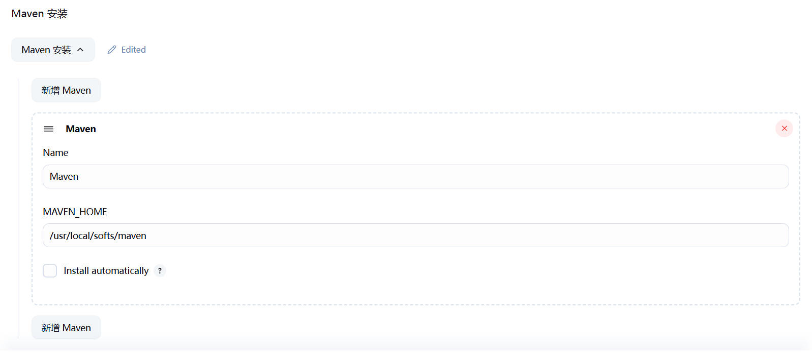
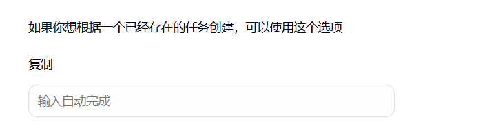

Jenkins + Gitlab配置Springboot多模块项目自动化编译部署
编写于2025年06月23日 修订于2025年10月28日 | 来源：https://www.myouone.xyz
前置条件
1、服务器已安装Java 8、Java 21，并配置JAVA_HOME环境变量，指向Java 8。
2、服务器已安装配置Gitlab，并可以正常将项目提交到Gitlab仓库。
3、如下命令均为root用户执行，服务器为centos7，springboot项目为Java 8，Jenkins运行Java环境为Java 21。
正文
安装Maven
wget https://dlcdn.apache.org/maven/maven-3/3.9.4/binaries/apache-maven-3.9.4-bin.tar.gz # 解压以后重命名为maven并放在合适的目录下，笔者放在了/usr/local/softs # 配置setting文件 cd /usr/local/softs/maven/conf vim settings.xml # 配置本地仓库地址，并在目录中创建repository文件夹 <localRepository>/usr/local/softs/maven/repository</localRepository> # 配置镜像 <!-- 阿里云仓库 --> <mirror> <id>alimaven</id> <mirrorOf>central</mirrorOf> <name>aliyun maven</name> <url>http://maven.aliyun.com/nexus/content/repositories/central/</url> </mirror> <!-- 中央仓库1 --> <mirror> <id>repo1</id> <mirrorOf>central</mirrorOf> <name>Human Readable Name for this Mirror.</name> <url>http://repo1.maven.org/maven2/</url> </mirror> <!-- 中央仓库2 --> <mirror> <id>repo2</id> <mirrorOf>central</mirrorOf> <name>Human Readable Name for this Mirror.</name> <url>http://repo2.maven.org/maven2/</url> </mirror> # 配置Maven环境变量 vim /etc/profile export MAVEN_HOME=/usr/local/softs/maven-3.9.4 export PATH=$PATH:$MAVEN_HOME/bin # 配置生效 source /etc/profile # 验证 mvn -v
安装Git
yum install -y git
安装Jenkins
https://www.jenkins.io/zh/download/
Jenkins 安装2.504.2版本，可以在以前的发行版中找其他版本。笔者安装时遇到一个问题是想下载支持Java 8的版本，但是比较老的版本已经没法在线安装插件，所以选择了较高的2.504.2版本，用Java21运行。
cd /data/jenkins wget https://mirrors.jenkins.io/war-stable/2.504.2/jenkins.war # 配置JENKINS_HOME，路径指向一个较大容量的磁盘，后期比较费空间 vim /etc/profile export JENKINS_HOME=/home/hadi/data/jenkins/jenkins # 使文件生效 source /etc/profile # 指定端口启动 nohup java -jar jenkins.war --httpPort=18081 > log.log 2>&1 &
访问管理页面：http://ip:18081/jenkins

# 获取管理员密码： cat /home/hadi/data/jenkins/jenkins/secrets/initialAdminPassword
输入管理员密码以后，先选择推荐的安装。
然后按照页面操作步骤操作即可，全部操作完成以后，进入以下页面。

jenkins安装完成后，首先进行插件的下载（Jenkins页面 → Manage Jenkins → Plugins）需要安装的插件有：Maven Integration；GitLab（全部）；Git（全部）；ssh（全部）；如下页面操作：
可以从Installed plugins中查看有哪些告警或弃用的插件可以从Installed plugins中卸载掉，重启即可生效。
插件安装完成后，我们进行全局的配置（Jenkins页面 → Manage Jenkins → Tools），其中包括Maven、jdk、git的配置。


注意：Install automatically都不勾选。
全局配置完成之后，进行系统配置（Jenkins页面 → Manage Jenkins → System），主要是配置ssh服务。
回到主页，点击新建Item，填好项目名称以后，选择构建一个Maven项目，进入配置页面，安装如下步骤依次操作：
1、源码管理配置Git
2、点击如上添加按钮，配置Credentials（也可以从如下路径配置：Dashboard → Manage Jenkins → Credentials），如下：
填写Gitlab的用户名密码。
3、Triggers勾选如下选项
3、配置Build
Goals and options为Maven编译打包命令，这里是多模块项目，只打包todo模块，并且由-am命令将依赖模块自动打包。
这里会有问题是新版Jenkins限制的最低Java编译版本，Java 8不符合要求，所以要做如下配置：
在项目pom.xml中添加如下配置：
<!-- 配置 toolchains 插件 --> <plugin> <groupId>org.apache.maven.plugins</groupId> <artifactId>maven-toolchains-plugin</artifactId> <version>3.1.0</version> <executions> <execution> <goals><goal>toolchain</goal></goals> </execution> </executions> <configuration> <toolchains> <jdk> <version>1.8</version> </jdk> </toolchains> </configuration> </plugin>
在服务器用户目录的m2文件夹（笔者是/root/.m2）中添加如下文件：
cd /root/.m2 vim toolchains.xml <toolchains> <toolchain> <type>jdk</type> <provides> <version>1.8</version> <!-- 要使用的 JDK 版本标识，与后续 POM 关联 --> <vendor>Oracle</vendor> <!-- 供应商，可自定义 --> </provides> <configuration> <jdkHome>/usr/local/softs/jdk1.8.0_221</jdkHome> <!-- JDK 实际路径 --> </configuration> </toolchain> </toolchains> 保存退出
4、Post Steps
5、构建后操作
构建后操作是在编译打包完成项目以后，将项目发布上线。
6、其他模块快速配置方法
回到主页，点击新建Item，输入项目名称以后，在页面的最下边填写要复制的项目名，即可快速复制一个项目出来。
